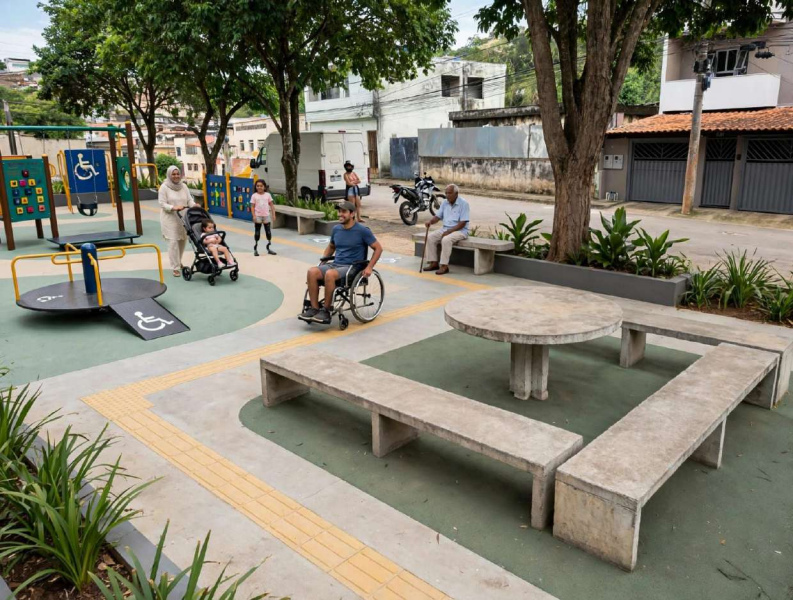

01
Parques infantis e brinquedos inclusivos
Parques convencionais costumam ter barreiras físicas que excluem crianças com deficiência ou mobilidade reduzida, além de dificultar o acompanhamento por pais ou responsáveis com deficiência. A instalação de brinquedos adaptados e acessíveis promove o brincar compartilhado e o desenvolvimento social.
Critérios de acessibilidade
- Rotas acessíveis ligando a entrada da praça até a área de lazer e entre os brinquedos.
- Piso regular, firme, estável, contínuo e com absorção de impacto (como borracha drenante ou grama sintética acessível).
- Brinquedos com transferência assistida ou acesso direto em cadeira de rodas (balanços adaptados, gira-giras nivelados ao piso e painéis sensoriais).
- Áreas de aproximação e manobra livres junto aos equipamentos.
Referências: ABNT NBR 9050:2020 (Seção 10.15)
e ABNT NBR 16071.